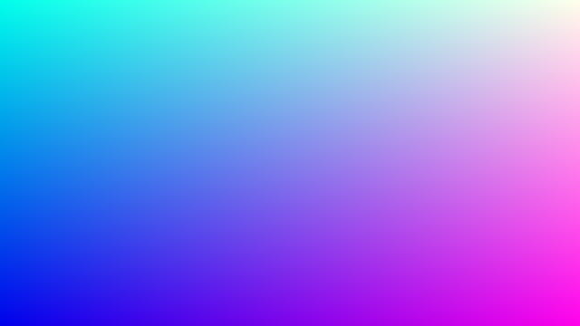
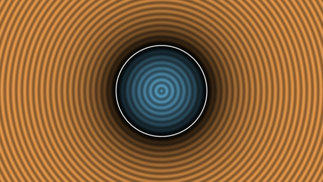

第 1 章 GLSL とフラグメントシェーダーの基礎
この章では、レイマーチングを書くために必要な GLSL とフラグメントシェーダーの知識を最小限に絞って説明する。最後に、第 2 章以降の土台となる「距離」を使った 2 次元の図形の描き方を示す。
シェーダーとは
シェーダー は GPU 上で実行されるプログラムである。CPU のプログラムが 1 つの処理を順番に実行するのに対し、シェーダーは同じプログラムを大量のデータに対して並列に実行する。
本資料で扱う フラグメントシェーダー は、画面の各ピクセルの色を決めるプログラムである。1920 × 1080 の画面であれば、約 200 万個のピクセルそれぞれについて同じ関数が独立に呼び出される。このとき、各呼び出しには次の制約がある。
入力として受け取れるのは、自分のピクセルの座標と、全ピクセルに共通の値（uniform 変数）だけである。
他のピクセルの計算結果を参照することはできない。
出力は自分のピクセルの色だけである。
つまりフラグメントシェーダーは、「ピクセル座標を受け取って色を返す関数」と考えればよい。レイマーチングでは、この関数の中で視点からそのピクセルを通るレイを作り、レイが最初に当たる物体を探して、その色を計算する。
レンダリングパイプラインの概略
OpenGL や WebGL で図形を描くときは、おおむね次の順に処理が進む。
頂点シェーダー が、ポリゴンの各頂点を画面上の位置に変換する。
ラスタライザーが、ポリゴンが覆うピクセルを列挙する。
フラグメントシェーダーが、列挙された各ピクセルの色を計算する。
通常の 3DCG では、形状はポリゴンで表され、その形状を頂点シェーダーとラスタライザーが画面に投影する。一方、レイマーチングでは、画面全体を覆う四角形（2 つの三角形）だけを描き、形状の計算はすべてフラグメントシェーダーで行う。本資料のサンプルは Shadertoy と同じくこの構成をとっており、読者が書くのはフラグメントシェーダーだけである。
GLSL の基本
GLSL （OpenGL Shading Language）は C 言語に似た文法を持つシェーダー言語である。本資料のサンプルは WebGL2 で使われる GLSL ES 3.00 の範囲で書いている。ここではレイマーチングでよく使う機能に絞って説明する。
型
型 |
説明 |
|---|---|
|
32 ビットの浮動小数点数 |
|
32 ビットの符号付き整数、符号なし整数 |
|
真偽値 |
|
|
|
|
|
|
ベクトルはコンストラクターで作る。引数の成分数の合計が一致していれば、スカラーとベクトルを混ぜて渡せる。成分は .xyzw （位置として使う場合）または .rgba （色として使う場合）で取り出す。複数の成分を並べて取り出したり、順番を入れ替えたりすることもでき、これを スウィズル と呼ぶ。
1vec3 a = vec3(1.0, 2.0, 3.0);
2vec3 b = vec3(0.5); // すべての成分が 0.5
3vec4 c = vec4(a, 1.0); // (1.0, 2.0, 3.0, 1.0)
4vec2 d = a.xy; // (1.0, 2.0)
5vec3 e = a.zyx; // (3.0, 2.0, 1.0)
6vec3 f = a * b + 1.0; // 成分ごとの積と和: (1.5, 2.0, 2.5)
ベクトル同士の +、-、*、/ は成分ごとの演算になる。内積や外積は組み込み関数 dot と cross を使う。一方、行列とベクトルの * は通常の行列の積である。行列は列優先（column-major）で格納され、mat3(a, b, c) は a、b、c を列ベクトルとする行列になる。
GLSL には暗黙の型変換がほとんど無い。例えば float x = 1; は GLSL ES 3.00 ではエラーになるため、浮動小数点数の定数は必ず 1.0 のように小数点を付けて書く。整数から変換する場合は float(i) のように明示する。また、関数の再帰呼び出しはできない。
よく使う組み込み関数
関数 |
説明 |
|---|---|
|
ベクトルの長さ \(|\mathbf{v}|\) |
|
正規化したベクトル \(\mathbf{v} / |\mathbf{v}|\) |
|
内積、外積 |
|
絶対値、符号、切り捨て、小数部、剰余（ベクトルには成分ごとに作用する） |
|
最小値、最大値、\(x\) を区間 \([a, b]\) に収めた値 |
|
線形補間 \(a (1 - t) + b t\) |
|
\(x < e\) のとき 0、それ以外は 1 |
|
\(x\) が \(e_0\) から \(e_1\) に変わる間に 0 から 1 へ滑らかに変化する値 |
|
反射方向、屈折方向（第 11 章で使う） |
Shadertoy の入出力
本資料のサンプルは、Shadertoy と同じ形式で書いている。シェーダーのファイルには、次の形の関数 mainImage を定義する。
1void mainImage(out vec4 fragColor, in vec2 fragCoord)
2{
3 fragColor = vec4(1.0, 0.0, 0.0, 1.0); // すべてのピクセルを赤にする
4}
fragCoord はピクセルの中心の座標で、画面の左下が原点、単位はピクセルである。例えば左下のピクセルでは (0.5, 0.5) になる。fragColor には RGBA の色を 0〜1 の範囲で書き込む。out と in は、それぞれ出力用と入力用の引数であることを表す。
さらに、次の uniform 変数が使える。付属のビューアーも同じ変数を提供する。
変数名 |
型 |
内容 |
|---|---|---|
|
|
描画領域の解像度。 |
|
|
実行開始からの経過時間（秒） |
|
|
前のフレームからの経過時間（秒） |
|
|
フレーム番号（0 から始まる） |
|
|
|
|
|
別のパスの描画結果を読み出すテクスチャ。複数パスの描画で使う（第 17 章）。 |
|
|
各チャンネルのテクスチャの解像度 |
最初のシェーダー
最初の例として、ピクセル座標をそのまま色として出力する。
1// 01_uv.frag
2// 第 1 章: ピクセル座標を 0〜1 に正規化し、そのまま色として出力する。
3
4void mainImage(out vec4 fragColor, in vec2 fragCoord)
5{
6 // fragCoord はピクセル中心の座標 (左下が原点、単位はピクセル)
7 vec2 uv = fragCoord / iResolution.xy;
8
9 // R に x、G に y、B に時間とともに変化する値を割り当てる
10 vec3 col = vec3(uv, 0.5 + 0.5 * sin(iTime));
11
12 fragColor = vec4(col, 1.0);
13}
fragCoord を解像度で割ると、画面の左下が \((0, 0)\)、右上が \((1, 1)\) になる座標 uv が得られる。この x を赤、y を緑に割り当てるため、右に行くほど赤く、上に行くほど緑になる。青の成分は iTime によって時間とともに変化する。

01_uv.frag の実行結果（iTime = 1 の時点）。青の成分は約 0.92 である。
座標の正規化
uv は縦横とも 0〜1 なので、画面が横長のときは横方向に引き伸ばされた座標になる。このまま円を描くと楕円になってしまう。そこで、以降のサンプルでは次の式で座標を変換する。
ここで \(\mathbf{f}\) は fragCoord、\(\mathbf{r}\) は iResolution.xy、\(r_y\) は画面の高さである。この座標 \(\mathbf{p}\) は画面の中央が原点で、縦方向が \(-1\) 〜 \(1\) になる。横方向の範囲は画面の縦横比によって決まり、例えば 16 : 9 の画面では約 \(-1.78\) 〜 \(1.78\) になる。縦と横の単位の長さが等しいため、図形が歪まない。
2 次元の距離関数で円を描く
次に、この座標を使って円を描く。「点 \(\mathbf{p}\) が円の内側にあるか」を判定する代わりに、「点 \(\mathbf{p}\) から円周までの距離」を計算する。原点を中心とする半径 \(r\) の円について、この距離は次の式で表せる。
\(d\) は円の外側で正、円周上で 0、内側で負になる。このように、表面までの距離に内外を表す符号を付けた関数を 符号付き距離関数 （Signed Distance Function、SDF）と呼ぶ。次のサンプルでは、SDF の値によって色を変え、さらに距離に比例した縞模様を重ねて、SDF の値を可視化している。
1// 01_circle2d.frag
2// 第 1 章: 2 次元の距離関数で円を描き、距離の値を縞模様で可視化する。
3
4// 原点を中心とする半径 r の円までの符号付き距離
5float sdCircle(vec2 p, float r)
6{
7 return length(p) - r;
8}
9
10void mainImage(out vec4 fragColor, in vec2 fragCoord)
11{
12 // 画面中央を原点とし、縦方向が -1〜1 になる座標に変換する
13 vec2 p = (2.0 * fragCoord - iResolution.xy) / iResolution.y;
14
15 float d = sdCircle(p, 0.5);
16
17 // 外側 (d > 0) を橙、内側 (d < 0) を青で塗る
18 vec3 col = (d > 0.0) ? vec3(0.9, 0.6, 0.3) : vec3(0.4, 0.7, 0.85);
19 // 境界から離れるほど明るくし、距離に比例した縞を重ねる
20 col *= 1.0 - exp(-4.0 * abs(d));
21 col *= 0.8 + 0.2 * cos(100.0 * d);
22 // 境界 (d = 0) を白い線で描く
23 col = mix(col, vec3(1.0), 1.0 - smoothstep(0.0, 0.01, abs(d)));
24
25 fragColor = vec4(col, 1.0);
26}
01_circle2d.frag をダウンロード ｜ ブラウザーで実行

01_circle2d.frag の実行結果。縞の間隔が一定であることから、SDF の値が円周からの距離に正確に比例していることがわかる。
23 行目では smoothstep を使い、\(|d|\) が 0.01 未満の範囲を白く塗って境界線を描いている。SDF は境界からの距離を直接与えるため、このように一定の太さの輪郭線を簡単に描ける。
2 次元の SDF では、各ピクセルの SDF の値をそのまま色に変換すればよかった。3 次元の場合は、画面のピクセルから奥に向かって伸びるレイの上で、SDF が 0 になる点を探す必要がある。その方法が次の章で扱うレイマーチングである。